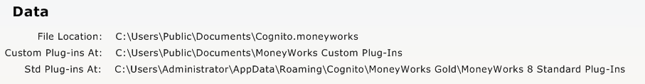
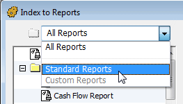

MoneyWorks Manual
Managing Your Plug-ins
Reports and forms (invoice layouts etc) are provided as plug-ins, allowing you to share ones you have created with other users. To be seen by MoneyWorks they must be stored in the correct location (MoneyWorks will normally manage all this for you).
Standard Reports and Forms supplied as part of MoneyWorks reside in the MoneyWorks 9 Standard Plug-ins folder1. This is automatically made for you when you install MoneyWorks.
Reports and Forms that you create (or modify), as well as Pictures (item pictures or transaction images) reside in the MoneyWorks Custom Plug-ins folder. This will be automatically created for you when you first create a report or form, or you can make it in the Index to Reports (see Creating a Custom Plug-ins Folder). You can also access these folders from the Data section of the Housekeeping panel in Navigator, as shown below:

Note: It is important not to put forms/reports that you create into the Standard Plug-ins folder as MoneyWorks may over-write this when new versions are released. This will destroy the existing contents.
Note: The Custom Plug-ins folder contains four sub-folders, for holding Reports, Forms, Scripts and Import Maps.
MoneyWorks Standard Plug-ins Folder
On the Mac the Standard Plugins are created in the Application Support folder in the user domain:
~/Library/Application Support/Cognito/MoneyWorks Gold/MoneyWorks 9 Standard Plug-Ins
On Windows, they are created in the APPDATA folder, typically something like:
C:\Documents and Settings\USERNAME\Application Data\Cognito \MoneyWorks Gold\MoneyWorks 9 Standard Plug-Ins
To locate the folder, click on the link in the Data section of the Housekeeping Navigator panel or use Reports>Index to Reports.
Note:
- If you delete the standard plug-ins folder, MoneyWorks will recreate it.
- If you update the MoneyWorks software, MoneyWorks may overwrite any of the standard plugins files with new versions without warning (so if you change any of these files the changes should be saved in Custom plugins).
- If you do not want MoneyWorks to recreate the contents of the standard plugins folder, you may place an empty file at the top level of the Standard Plug-Ins folder called "No Standard Plugins". If MoneyWorks sees this it will not recreate standard plugins, even after a software update.
MoneyWorks Custom Plug-ins Folder
The location of this varies, depending on whether you are hosting MoneyWorks on your computer, or are connecting to another machine using Gold or Datacentre. To locate the folder for the currently open document, click on the link in the Data section of the Housekeeping Navigator panel or use Reports>Index to Reports.
For a local document:
In the same folder as the document
For a document you connect to on a Gold server:
In the same location as the standard plugins folder (see above)
For a document you connect to on a Datacentre server:
If there is a custom plugins folder for the document on the server, it will automatically be downloaded to (Mac):
~/Library/Application Support/Cognito/MoneyWorks Gold/ <datacentre_name>/<subfolders>/MoneyWorks Custom Plug-Ins
or on Windows to:
C:\Documents and Settings\USERNAME\Application Data\Cognito\MoneyWorks Gold\<datacentre_name>\<subfolders>\MoneyWorks Custom Plug-Ins
where <datacentre_name> is the name of the Datacentre server as set in its configuration page, and <subfolders> is the subfolder hierarchy (if any) that the document resides in within the Datacentre document root folder on the server.
Creating a Custom Plug-ins Folder
- Choose Reports>Index to Reports
- Click the Make Custom Plug-ins button
This is only present if there is no custom plug-ins folder for the currently open file.
Note: MoneyWorks will automatically create the MoneyWorks Custom Plug-ins folder for you the first time you need it (e.g. saving a custom report or form).
To Reveal the Standard or Custom Plug-ins Folder
The easiest way is just to click on the link in the Data section of the Housekeeping Navigator panel, but it can also be located using Reports>Index to Reports:

- Choose Reports>Index to Reports
- Set the pop-up menu at top left from All Reports to Standard Reports or Custom Reports
- Click the folder icon next to the pop-up menu
The selected folder will be revealed in the Finder (Mac) or Windows Explorer.
To remove your Custom Plug-ins Folder on Datacentre
- Choose Reports>Index to Reports
- Set the pop-up menu at top left from All Reports to Custom Reports
- Click the Remove Custom Plugins button
Confirmation will be requested. If you delete your local Datacentre Custom Plug-ins folder, a new copy will be downloaded from the Datacentre server the next time you connect.
1 Prior to MoneyWorks 7, this was called MoneyWorks Standard Plug-ins ↩